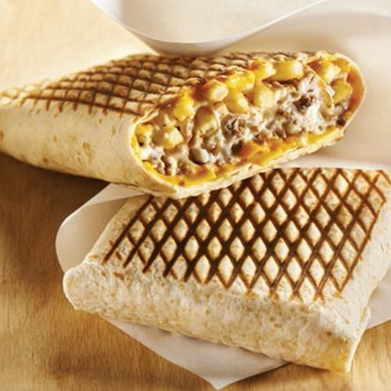

French Tacos

Description
A Mexican-inspired, French fast food dish, these "tacos" are the culinary fusion you didn't know you needed. Big Zuu's take on the dish, as seen on the Dave series Big Zuu's Big Eats, combines chicken, peppers, homemade nacho cheese and an addictive Sauce Algérienne.
Ingredients
Baked fries :
- 3 potatoes
- 1 tbsp olive oil
- salt
Meat
- 7 oz ground beef
- 1 onion
- olive oil
- salt
- pepper
Cheese sauce
- 3/4 cup cream
- 1/4 cup emmental cheese
- 1/2 cup cheddar
- 4 big wheat tortillas
- 4 tbsp sauce (ketchup, barbecue, mayonnaise..)
- pepper
Steps
- Fries: Peel the potatoes and cut them in fries. Mix them with olive oil and salt and put them on a baking paper. Bake them 20 min at 430°F (220°C).
- Meat: Cook the onion in olive oil, when it's transluscent, add the ground beef + salt + pepper. Stir occasionally until it's cooked.
- Cheese sauce: Heat and boil the cream. Then, add the emmental cheese and the cheddar. Season with pepper. Thicken the sauce and blend it.
- Put two tortillas one on top of the other. Spread barbecue sauce (or ketchup..) in the center and put half of the fries on top.
- Add half of the cheese sauce and half of the meat. If everything is well centered it will me easier to fold ;-)
- Fold the borders one by one beginning by the top, then the one in front and finaly the two sides.
- Turn the french tacos and cook it in a panini grill during 3 minutes ( or in a pan 3 minutes on each sides ).
- Repeat with the second french tacos and that's it !